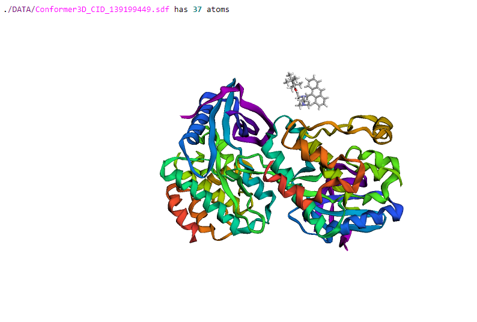
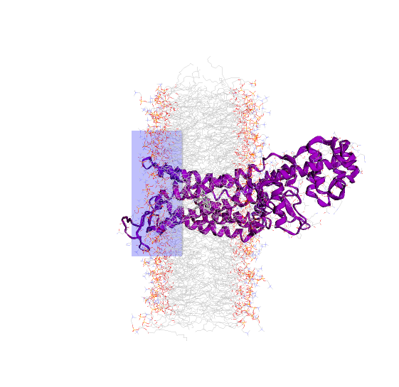
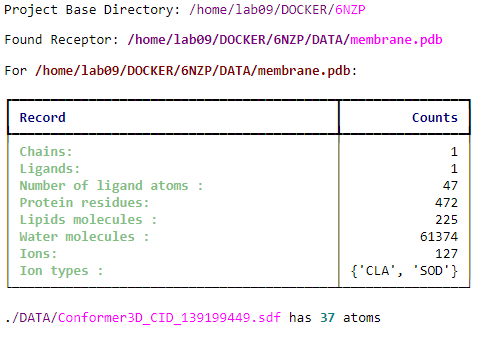
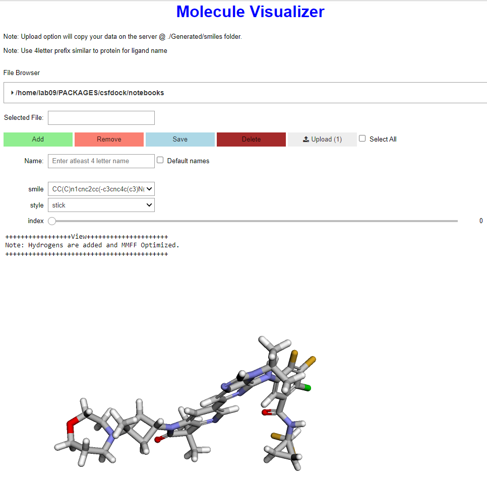
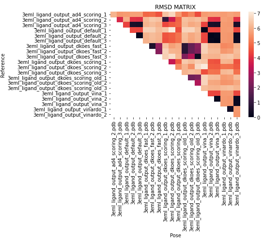

CsfDock


A simple package for making custome scoring function in smina, visulaization of molecules, ligand and memebrane using py3dmol.
An implementation of regression for optimizing scoring function and $alpha$ and $beta$ from experimental data.
Features
Visualize Receptor, lipids and ligands
Automate docking using smina
Calculate RMSD and plot RMSD Matrix
Develop Custom Scoring Functions
Optimize $alpha$ and $beta$
and many more..
Requirements
TODO
Installation
You can install CsfDock via pip from PyPI:
$ pip install csfdock
Usage
from csfdock.ar2a_v3 import *
Create an Object of the ProjectStart:
a2 = ProjectStart()
Can set your project directory as follow which may not be same as the runing notebook.Creates a relative paths for files inside the project directory
a2.SetFolders(".")
Adding a receptor into the project is as easy as following:
a2.LoadReceptor("membrane")
a2.SimpleView
Similarly for Ligand as well
a2.LoadLigand("./DATA/Conformer3D_CID_139199449.sdf")

For docking visualization of grid box around active site is important. Here we can just give an input to create a grid and visualize it.
a2.LoadBox([7.623, 3.103, -18.483], [30.0, 50, 20])
Whole view of the molecules loaded into the project instance can be visualize as following:
a2.ShowMolecules()

View the detail information of the project instace using print() method on the instance variable.
print(a2)

a2.display()
Visualize smiles code and generate 3D structures.

df =rmsd_matrix(poses,verbose=False, plot=True, save=True, annot=True, key="latest_calculation")
View the RMSDs of the ligands docked in matrix view.

Please see the Command-line Reference for details.
Contributing
Contributions are very welcome. To learn more, see the Contributor Guide.
License
Distributed under the terms of the MIT license, CsfDock is free and open source software.
Issues
If you encounter any problems, please file an issue along with a detailed description.